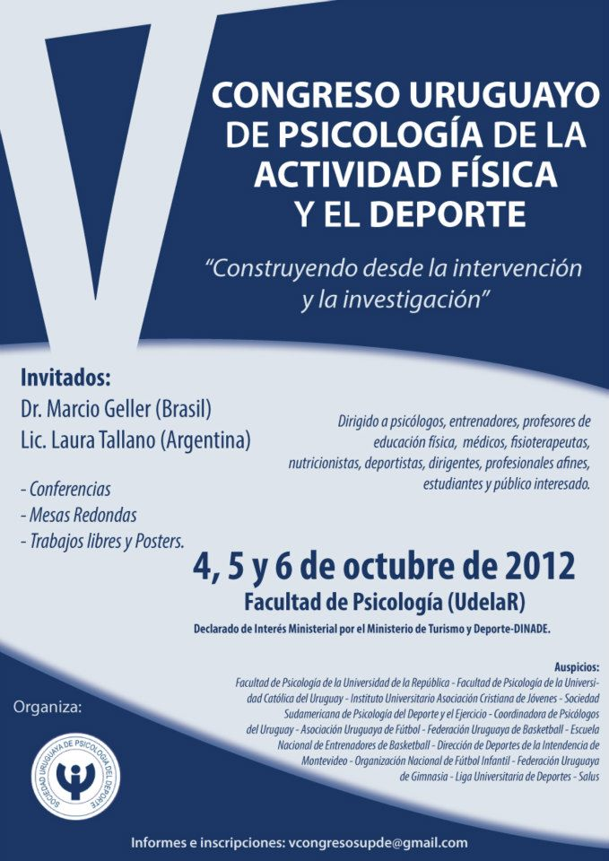
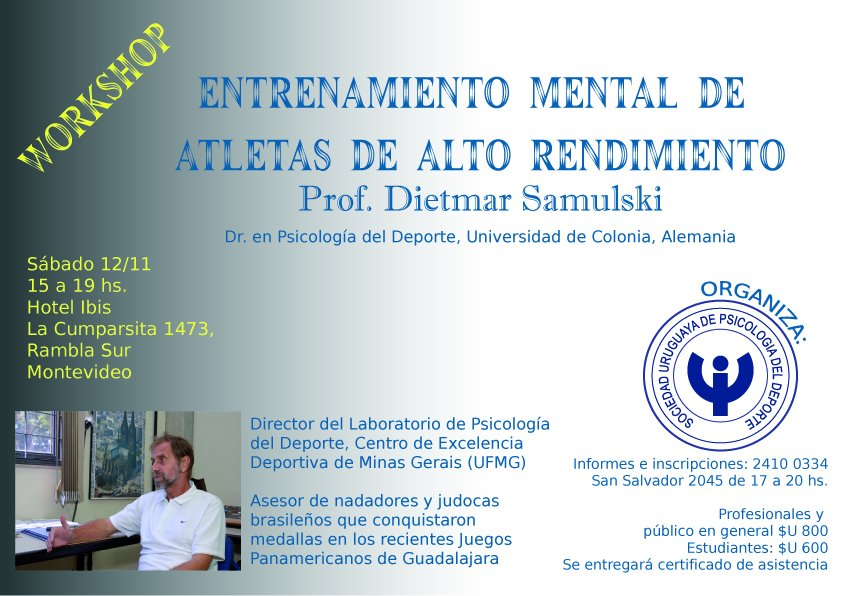
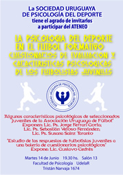
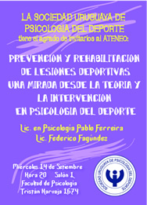
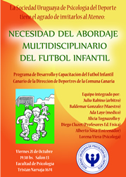

La Sociedad Uruguaya de Psicología organizó en el año 2009 el V Congreso Uruguayo de Psicología del Deporte y la Actividad Física.
V Congreso Uruguayo de Psicología de la Actividad Física y el Deporte
"Construyendo desde la intervención y la investigación"
4, 5 y 6 de Octubre de 2012, Facultad de Psicoloía (UdelaR)
Dirigido a psicólogos, entrenadores, profesionalesres de educación física, médicos, fisioterapeutas, nutricionistas, deportistas, dirigentes, profesionales afines, estudiantes y público interesado.
Invitados:
- Dr. Marcio Geller (Brasil)
- Lic. Laura Tallano (Argentina)
Organiza:
Sociedad Uruguaya de Psicología del Deporte
Informes e Inscripciones:
vcongresosupde@gmail.com
A lo largo del año se realizan ateneos y workshops en los que se invita a profesionales y personalidades destacadas del deporte en nuestro país.
Workshop
Entrenamiento Mental de Atletas de Alto Rendimiento
Prof. Dietmar Samulski
Dr. en Psicología del Deporte, Universidad de Colonia, Alemania
Sábado 12/11 15 a 19 hs.
Hotel Ibis.
La Cumparsita 1473, Rambla Sur, Montevideo
Organiza:
Sociedad Uruguaya de Psicología del Deporte
Informes e Inscripciones: 2410 03 34 o San Salvador 2045 de 17 a 20 Hs.
Profesionales y público en general $u 800.
Estudiantes $u 600.
Se entregará certificado de asistencia.
Ateneos
-

La psicología del deporte en el fútbol formativo
Cuestionarios de evaluación y caracteristicas psicologicas de los futbolistas juveniles
Martes 14 de Junio 10:30 Hs Salón 13 Facultad de Psicología UdelaR
Organiza:
Sociedad Uruguaya de Psicología del Deporte
-

Prevención y Rehabilitación de Lesiones Deportivas una mirada desde la teoría y la Intervención en Psicología del deporte
- Lic. en Psicología Pablo Ferreira
- Lic. Federico Fagúndez
Miércoles 14 de Setiembre 20:00 Hs Salón 1 Facultad de Psicología UdelaR
Organiza:
Sociedad Uruguaya de Psicología del Deporte
-

Necesidad del Abordaje multidisciplinario del fútbol infantil
Programa de Desarrollo y Capacitación del Fútbol Infantil
Viernes 19 de Octubre 19:00 Hs Salón 10 Facultad de Psicología UdelaR
Organiza:
Sociedad Uruguaya de Psicología del Deporte
Diversos profesionales integrantes de nuestra Sociedad han brindado a lo largo de nuestros 21 años varios cursos de temáticas relacionadas con la Psicología del Deporte.
Para el año lectivo 2011 tenemos el agrado de ofrecer nuevamente el primer nivel del curso:
PSICOLOGÍA DEL DEPORTE Y LA ACTIVIDAD FÍSICA
Orientado a:
Psicólogos (egresados de UdelaR y UCUDAL) y Estudiantes avanzados (previa entrevista)
Comienzo:
Sábado 7 de Mayo.
Duración:
Mayo a Diciembre – 90 horas
Encuentros:
Sábados de 9 a 12 hs.
Equipo Docente:
Lics. Ps. Jesús Chalela, Jorge Salvo, Gustavo Bello, Graciela Pereira y Flavia Vique.
Lugar:
Liga Universitaria de Deportes. Estadio Centenario. Tribuna Colombes. Puerta 22.
Informes e Inscripciones:
- cursos@supde.org
Optimismo y Rendimiento Deportivo
Prof. Dr. Francisco Ortín (España)
Doctor en Pcicología del Deporte
Master en Psicología de la Actividad Física y el Deporte
Vicepresidente de la Sociedad Murciana De Psicología de la Actividad Física y el Deporte.
Organiza:
Universidad Católica del Uruguay
Informes:
Facultad de Psicología 2487 27 17 int. 229
facpcicologia@ucu.edu.uyInscripciones:
Oficina de Registro Académico: 9 a 19 Hs.
Hasta el 14 de junio.
Costo $u 700 Estudiantes y graduados UCU (25%)
El pago puede realizarse en tre pagos con tarjeta de crédito.